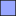
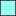
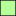

<!doctype html>
<html lang="en">
    <head>
        <meta charset="utf-8">
        <meta http-equiv="X-UA-Compatible" content="IE=edge">
        <meta name="viewport" content="initial-scale=1,user-scalable=no,maximum-scale=1,width=device-width">
        <meta name="mobile-web-app-capable" content="yes">
        <meta name="apple-mobile-web-app-capable" content="yes">
        <link rel="stylesheet" href="css/leaflet.css">
        <link rel="stylesheet" href="css/L.Control.Layers.Tree.css">
        <link rel="stylesheet" href="css/qgis2web.css">
        <link rel="stylesheet" href="css/fontawesome-all.min.css">
        <link rel="stylesheet" href="css/leaflet-measure.css">
        <style>
        html, body, #map {
            width: 100%;
            height: 100%;
            padding: 0;
            margin: 0;
        }
        </style>
        <title></title>
    </head>
    <body>
        <div id="map">
        </div>
        <script src="js/qgis2web_expressions.js"></script>
        <script src="js/leaflet.js"></script>
        <script src="js/L.Control.Layers.Tree.min.js"></script>
        <script src="js/leaflet.rotatedMarker.js"></script>
        <script src="js/leaflet.pattern.js"></script>
        <script src="js/leaflet-hash.js"></script>
        <script src="js/Autolinker.min.js"></script>
        <script src="js/rbush.min.js"></script>
        <script src="js/labelgun.min.js"></script>
        <script src="js/labels.js"></script>
        <script src="js/leaflet-measure.js"></script>
        <script src="data/Castling_2.js"></script>
        <script src="data/Logistik_3.js"></script>
        <script src="data/Laboratories_4.js"></script>
        <script src="data/Produktion_5.js"></script>
        <script src="data/Fastighet_6.js"></script>
        <script src="data/Installation_7.js"></script>
        <script>
        var map = L.map('map', {
            zoomControl:false, maxZoom:28, minZoom:1
        }).fitBounds([[56.1611902557299,15.617771349189134],[56.17319467829819,15.655787766866714]]);
        var hash = new L.Hash(map);
        map.attributionControl.setPrefix('<a href="https://github.com/tomchadwin/qgis2web" target="_blank">qgis2web</a> &middot; <a href="https://leafletjs.com" title="A JS library for interactive maps">Leaflet</a> &middot; <a href="https://qgis.org">QGIS</a>');
        var autolinker = new Autolinker({truncate: {length: 30, location: 'smart'}});
        // remove popup's row if "visible-with-data"
        function removeEmptyRowsFromPopupContent(content, feature) {
         var tempDiv = document.createElement('div');
         tempDiv.innerHTML = content;
         var rows = tempDiv.querySelectorAll('tr');
         for (var i = 0; i < rows.length; i++) {
             var td = rows[i].querySelector('td.visible-with-data');
             var key = td ? td.id : '';
             if (td && td.classList.contains('visible-with-data') && feature.properties[key] == null) {
                 rows[i].parentNode.removeChild(rows[i]);
             }
         }
         return tempDiv.innerHTML;
        }
        // add class to format popup if it contains media
		function addClassToPopupIfMedia(content, popup) {
			var tempDiv = document.createElement('div');
			tempDiv.innerHTML = content;
			if (tempDiv.querySelector('td img')) {
				popup._contentNode.classList.add('media');
					// Delay to force the redraw
					setTimeout(function() {
						popup.update();
					}, 10);
			} else {
				popup._contentNode.classList.remove('media');
			}
		}
        var zoomControl = L.control.zoom({
            position: 'topleft'
        }).addTo(map);
        var measureControl = new L.Control.Measure({
            position: 'topleft',
            primaryLengthUnit: 'meters',
            secondaryLengthUnit: 'kilometers',
            primaryAreaUnit: 'sqmeters',
            secondaryAreaUnit: 'hectares'
        });
        measureControl.addTo(map);
        document.getElementsByClassName('leaflet-control-measure-toggle')[0].innerHTML = '';
        document.getElementsByClassName('leaflet-control-measure-toggle')[0].className += ' fas fa-ruler';
        var bounds_group = new L.featureGroup([]);
        function setBounds() {
        }
        map.createPane('pane_GoogleSatellite_0');
        map.getPane('pane_GoogleSatellite_0').style.zIndex = 400;
        var layer_GoogleSatellite_0 = L.tileLayer('http://mt0.google.com/vt/lyrs=s&hl=en&x={x}&y={y}&z={z}', {
            pane: 'pane_GoogleSatellite_0',
            opacity: 1.0,
            attribution: '',
            minZoom: 1,
            maxZoom: 28,
            minNativeZoom: 0,
            maxNativeZoom: 18
        });
        layer_GoogleSatellite_0;
        map.addLayer(layer_GoogleSatellite_0);
        map.createPane('pane_Drnarfoto_1');
        map.getPane('pane_Drnarfoto_1').style.zIndex = 401;
        var layer_Drnarfoto_1 = L.tileLayer('https://github.com/nautuss/Nmapkarta/raw/main/surfacemap/{z}/{x}/{y}.png', {
            pane: 'pane_Drnarfoto_1',
            opacity: 1.0,
            attribution: '',
            minZoom: 1,
            maxZoom: 28,
            minNativeZoom: 0,
            maxNativeZoom: 18
        });
        layer_Drnarfoto_1;
        map.addLayer(layer_Drnarfoto_1);
        function pop_Castling_2(feature, layer) {
            var popupContent = '<table>\
                    <tr>\
                        <td colspan="2">' + (feature.properties['Namn'] !== null ? autolinker.link(String(feature.properties['Namn']).replace(/'/g, '\'').toLocaleString()) : '') + '</td>\
                    </tr>\
                </table>';
            var content = removeEmptyRowsFromPopupContent(popupContent, feature);
			layer.on('popupopen', function(e) {
				addClassToPopupIfMedia(content, e.popup);
			});
			layer.bindPopup(content, { maxHeight: 400 });
        }

        function style_Castling_2_0() {
            return {
                pane: 'pane_Castling_2',
                opacity: 1,
                color: 'rgba(35,35,35,1.0)',
                dashArray: '',
                lineCap: 'butt',
                lineJoin: 'miter',
                weight: 1.0, 
                fill: true,
                fillOpacity: 1,
                fillColor: 'rgba(255,200,1,0.4)',
                interactive: true,
            }
        }
        map.createPane('pane_Castling_2');
        map.getPane('pane_Castling_2').style.zIndex = 402;
        map.getPane('pane_Castling_2').style['mix-blend-mode'] = 'normal';
        var layer_Castling_2 = new L.geoJson(json_Castling_2, {
            attribution: '',
            interactive: true,
            dataVar: 'json_Castling_2',
            layerName: 'layer_Castling_2',
            pane: 'pane_Castling_2',
            onEachFeature: pop_Castling_2,
            style: style_Castling_2_0,
        });
        bounds_group.addLayer(layer_Castling_2);
        map.addLayer(layer_Castling_2);
        function pop_Logistik_3(feature, layer) {
            var popupContent = '<table>\
                    <tr>\
                        <td colspan="2">' + (feature.properties['Namn'] !== null ? autolinker.link(String(feature.properties['Namn']).replace(/'/g, '\'').toLocaleString()) : '') + '</td>\
                    </tr>\
                </table>';
            var content = removeEmptyRowsFromPopupContent(popupContent, feature);
			layer.on('popupopen', function(e) {
				addClassToPopupIfMedia(content, e.popup);
			});
			layer.bindPopup(content, { maxHeight: 400 });
        }

        function style_Logistik_3_0() {
            return {
                pane: 'pane_Logistik_3',
                opacity: 1,
                color: 'rgba(35,35,35,1.0)',
                dashArray: '',
                lineCap: 'butt',
                lineJoin: 'miter',
                weight: 1.0, 
                fill: true,
                fillOpacity: 1,
                fillColor: 'rgba(73,255,1,0.4)',
                interactive: true,
            }
        }
        map.createPane('pane_Logistik_3');
        map.getPane('pane_Logistik_3').style.zIndex = 403;
        map.getPane('pane_Logistik_3').style['mix-blend-mode'] = 'normal';
        var layer_Logistik_3 = new L.geoJson(json_Logistik_3, {
            attribution: '',
            interactive: true,
            dataVar: 'json_Logistik_3',
            layerName: 'layer_Logistik_3',
            pane: 'pane_Logistik_3',
            onEachFeature: pop_Logistik_3,
            style: style_Logistik_3_0,
        });
        bounds_group.addLayer(layer_Logistik_3);
        map.addLayer(layer_Logistik_3);
        function pop_Laboratories_4(feature, layer) {
            var popupContent = '<table>\
                </table>';
            var content = removeEmptyRowsFromPopupContent(popupContent, feature);
			layer.on('popupopen', function(e) {
				addClassToPopupIfMedia(content, e.popup);
			});
			layer.bindPopup(content, { maxHeight: 400 });
        }

        function style_Laboratories_4_0() {
            return {
                pane: 'pane_Laboratories_4',
                opacity: 1,
                color: 'rgba(35,35,35,1.0)',
                dashArray: '',
                lineCap: 'butt',
                lineJoin: 'miter',
                weight: 1.0, 
                fill: true,
                fillOpacity: 1,
                fillColor: 'rgba(1,255,225,0.4)',
                interactive: true,
            }
        }
        map.createPane('pane_Laboratories_4');
        map.getPane('pane_Laboratories_4').style.zIndex = 404;
        map.getPane('pane_Laboratories_4').style['mix-blend-mode'] = 'normal';
        var layer_Laboratories_4 = new L.geoJson(json_Laboratories_4, {
            attribution: '',
            interactive: true,
            dataVar: 'json_Laboratories_4',
            layerName: 'layer_Laboratories_4',
            pane: 'pane_Laboratories_4',
            onEachFeature: pop_Laboratories_4,
            style: style_Laboratories_4_0,
        });
        bounds_group.addLayer(layer_Laboratories_4);
        map.addLayer(layer_Laboratories_4);
        function pop_Produktion_5(feature, layer) {
            var popupContent = '<table>\
                    <tr>\
                        <td colspan="2">' + (feature.properties['Namn'] !== null ? autolinker.link(String(feature.properties['Namn']).replace(/'/g, '\'').toLocaleString()) : '') + '</td>\
                    </tr>\
                </table>';
            var content = removeEmptyRowsFromPopupContent(popupContent, feature);
			layer.on('popupopen', function(e) {
				addClassToPopupIfMedia(content, e.popup);
			});
			layer.bindPopup(content, { maxHeight: 400 });
        }

        function style_Produktion_5_0() {
            return {
                pane: 'pane_Produktion_5',
                opacity: 1,
                color: 'rgba(35,35,35,1.0)',
                dashArray: '',
                lineCap: 'butt',
                lineJoin: 'miter',
                weight: 1.0, 
                fill: true,
                fillOpacity: 1,
                fillColor: 'rgba(255,22,1,0.4)',
                interactive: true,
            }
        }
        map.createPane('pane_Produktion_5');
        map.getPane('pane_Produktion_5').style.zIndex = 405;
        map.getPane('pane_Produktion_5').style['mix-blend-mode'] = 'normal';
        var layer_Produktion_5 = new L.geoJson(json_Produktion_5, {
            attribution: '',
            interactive: true,
            dataVar: 'json_Produktion_5',
            layerName: 'layer_Produktion_5',
            pane: 'pane_Produktion_5',
            onEachFeature: pop_Produktion_5,
            style: style_Produktion_5_0,
        });
        bounds_group.addLayer(layer_Produktion_5);
        map.addLayer(layer_Produktion_5);
        function pop_Fastighet_6(feature, layer) {
            var popupContent = '<table>\
                </table>';
            var content = removeEmptyRowsFromPopupContent(popupContent, feature);
			layer.on('popupopen', function(e) {
				addClassToPopupIfMedia(content, e.popup);
			});
			layer.bindPopup(content, { maxHeight: 400 });
        }

        function style_Fastighet_6_0() {
            return {
                pane: 'pane_Fastighet_6',
                opacity: 1,
                color: 'rgba(35,35,35,1.0)',
                dashArray: '',
                lineCap: 'butt',
                lineJoin: 'miter',
                weight: 1.0, 
                fill: true,
                fillOpacity: 1,
                fillColor: 'rgba(1,35,255,0.4)',
                interactive: true,
            }
        }
        map.createPane('pane_Fastighet_6');
        map.getPane('pane_Fastighet_6').style.zIndex = 406;
        map.getPane('pane_Fastighet_6').style['mix-blend-mode'] = 'normal';
        var layer_Fastighet_6 = new L.geoJson(json_Fastighet_6, {
            attribution: '',
            interactive: true,
            dataVar: 'json_Fastighet_6',
            layerName: 'layer_Fastighet_6',
            pane: 'pane_Fastighet_6',
            onEachFeature: pop_Fastighet_6,
            style: style_Fastighet_6_0,
        });
        bounds_group.addLayer(layer_Fastighet_6);
        map.addLayer(layer_Fastighet_6);
        function pop_Installation_7(feature, layer) {
            var popupContent = '<table>\
                </table>';
            var content = removeEmptyRowsFromPopupContent(popupContent, feature);
			layer.on('popupopen', function(e) {
				addClassToPopupIfMedia(content, e.popup);
			});
			layer.bindPopup(content, { maxHeight: 400 });
        }

        function style_Installation_7_0() {
            return {
                pane: 'pane_Installation_7',
                opacity: 1,
                color: 'rgba(35,35,35,1.0)',
                dashArray: '',
                lineCap: 'butt',
                lineJoin: 'miter',
                weight: 1.0, 
                fill: true,
                fillOpacity: 1,
                fillColor: 'rgba(231,113,72,1.0)',
                interactive: true,
            }
        }
        map.createPane('pane_Installation_7');
        map.getPane('pane_Installation_7').style.zIndex = 407;
        map.getPane('pane_Installation_7').style['mix-blend-mode'] = 'normal';
        var layer_Installation_7 = new L.geoJson(json_Installation_7, {
            attribution: '',
            interactive: true,
            dataVar: 'json_Installation_7',
            layerName: 'layer_Installation_7',
            pane: 'pane_Installation_7',
            onEachFeature: pop_Installation_7,
            style: style_Installation_7_0,
        });
        bounds_group.addLayer(layer_Installation_7);
        map.addLayer(layer_Installation_7);
        var overlaysTree = [
        {label: '<b>Surface</b>', selectAllCheckbox: true, children: [
            {label: ' Installation', layer: layer_Installation_7},
            {label: ' Fastighet', layer: layer_Fastighet_6},
            {label: ' Produktion', layer: layer_Produktion_5},
            {label: ' Laboratories', layer: layer_Laboratories_4},
            {label: ' Logistik', layer: layer_Logistik_3},
            {label: ' Castling', layer: layer_Castling_2},]},
        {label: '<b>Kartor</b>', selectAllCheckbox: true, children: [
            {label: "Drönarfoto", layer: layer_Drnarfoto_1},
            {label: "Google Satellite", layer: layer_GoogleSatellite_0},]},]
        var lay = L.control.layers.tree(null, overlaysTree,{
            //namedToggle: true,
            //selectorBack: false,
            //closedSymbol: '&#8862; &#x1f5c0;',
            //openedSymbol: '&#8863; &#x1f5c1;',
            //collapseAll: 'Collapse all',
            //expandAll: 'Expand all',
            collapsed: true,
        });
        lay.addTo(map);
        setBounds();
        </script>
    </body>
</html>
